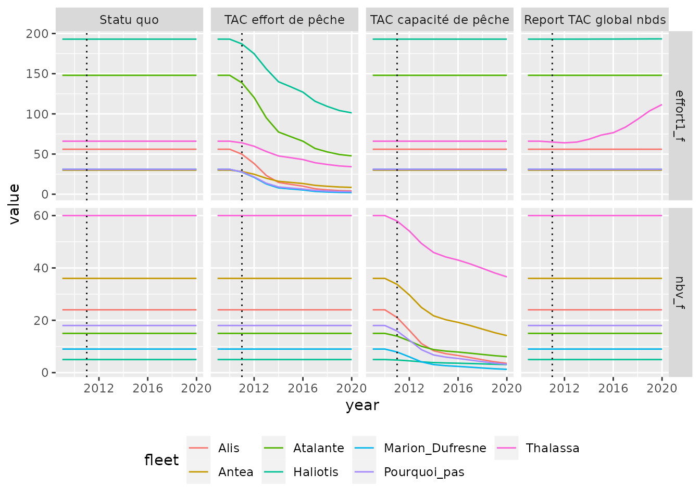

# Dépendances pour l'analyse des données et les représentations graphiques.
library(magrittr)
library(ggplot2)
library(dplyr)
library(IAM)
library(pbapply) # allow progress bar in replicate and apply.Le modèle bio-économique IAM a été développé notamment pour permettre d’accompagner le développement des plans de gestion des pêcheries et d’explorer les conséquences biologiques et socio-économiques de différents scénarios de TAC et quotas et de transition vers le Rendement Maximum Durable - RMD (ou Maximum Sustainable Yield - MSY).
Ce document présente la mise en œuvre avec le modèle IAM de scénarios de TAC et quotas correspondant à différents manières de moduler l’effort de pêche. Ce document traite de la gestion de TAC à un niveau interflotilles puis une autre partie détaillera la gestion intra flotilles.
L’ensemble des simulations présentées dans l’exemple sera réalisé avec le jeu de donnée example Ifremer composé de 7 flottilles et 3 espèces dynamiques dont une espèce à dynamique SS3. Les simulations prennent en compte la variabilité du recrutement et ses conséquences en termes de probabilité d’atteinte du FMSY. Dans ce cadre, une réplication de valeur N sera réalisée à partir du jeu de donnée exemple.
Attention ce document lance de nombreuses simulations \((1 + n_{TAC})\cdot N\) et prend donc un temps long à simuler (plusieurs dizaines de minutes).
data("IAM_input_2009")
summary(IAM_input_2009)
#> My Input (IAM input) :
#> Simulation of 3 dynamic species, 19 static species and 7 fleet
#> Simulation start in 2009 and end in 2020 (12 steps)
#>
#> ------------------------------------
#> Dynamic Species | Model | Ages |
#> ARC | XSA | 0 to +gp |
#> COR | XSA | 2 to +gp |
#> DAR | SS3 | 0 to +gp |
#> ------------------------------------
#> Fleet | nbv |
#> Alis | 24 |
#> Antea | 36 |
#> Atalante | 15 |
#> Haliotis | 5 |
#> Marion_Dufresne | 9 |
#> Pourquoi_pas | 18 |
#> Thalassa | 60 |L’objet argument est laissé tel quel lors de l’utilisation de l’interface et sera édité à la main plus tard pour chaque scénario.
# Cette ligne ouvre une interface via une app shiny.
IAM_argum_2009 <- IAM.args(IAM_input_2009)Cela revient à initialiser un objet de classe iamArgs sans passer par l’interface avec la commande suivante :
IAM_argum_2009 <- IAM.input2args(IAM_input_2009)Scénario statu quo
Afin de pouvoir comparer l’effet de chaque scénario, il nous faut un scénario de départ dans lequel aucune mesure de Gestion s’imposera.
Dans un premier temps il est utile de définir les dynamiques de recrutements ainsi que des éléments de paramétrage du module économique. On va pour cela éditer l’objet IAM_argum_2009.
# Module SR
# Add noise to COR recruitment
IAM_argum_2009@arguments$Recruitment$COR$wnNOISEmodSR <- 0.203
IAM_argum_2009@arguments$Recruitment$COR$noiseTypeSR <- 2 # Log-normal
IAM_argum_2009@arguments$Recruitment$COR$typeMODsr <- "Hockey-Stick"
IAM_argum_2009@arguments$Recruitment$COR$parAmodSR <- 2539.5
IAM_argum_2009@arguments$Recruitment$COR$parBmodSR <- 9679
# Module EcoDCF
IAM_argum_2009 <- IAM.editArgs_Eco(IAM_argum_2009, dr = 0.04, perscCalc = 1)
# Module Gestion
mfm <- with(IAM_input_2009@input$Fleet,{
(effort1_f_m * effort2_f_m * nbv_f_m) / as.vector(effort1_f * effort2_f * nbv_f)
})
mfm[is.na(mfm)] <- 0
IAM_argum_2009 <- IAM.editArgs_Gest(IAM_argum_2009, active = FALSE,
delay = 1, mfm = mfm)
# Module Scenario
IAM_argum_2009 <- IAM.editArgs_Scenar(IAM_argum_2009) # desactivate scenario
summary(IAM_argum_2009)
#> My Input (IAM argument) :
#> Simulation of 3 dynamic species, 19 static species and 7 fleet
#> Simulation start in 2009 and end in 2020 (12 steps)
#>
#> =======================================================================================
#> SR module | Stock Recruitment | Noise | Proba |
#> ---------------------------------------------------------------------------------------
#> Species | function : param A ; param B ; param C | Type : sd | Type |
#> ARC (XSA) | Mean 3.641e+07 0.00e+00 0.00e+00 | Norm | 0.00e+00 | . |
#> COR (XSA) | Hockey-Stick 2.540e+03 9.68e+03 0.00e+00 | LogN | 2.03e-01 | . |
#> DAR (SS3) | not activated 0.000e+00 0.00e+00 0.00e+00 | Norm | 0.00e+00 | . |
#> ---------------------------------------------------------------------------------------
#>
#> The Gestion module is not active.
#>
#> ============================================================
#> Economic : PerscCalc = 1 ; dr = 0.040 | No replicates |
#> ------------------------------------------------------------
#>
#> The Scenario module is not active.Les scénarios sont simulés avec \(N\) réplicats, correspondant à la variabilité du recrutement.
Les valeurs de \(N\), \(F_{msy}\) pour l’espèce COR et \(TAC\) sont fixées ici :
N <- 5
Fmsy <- 0.26
TAC <- 3600La simulation du scénario Statu Quo est codée comme suit :
Gestion TAC générale
Les différentes options de réglages du module Gestion sont exposées dans la vignette “Utilisation IAM dans R”. Il s’agit ici de les explorer plus en avant et de les utiliser.
On fixe ici un scénario de Gestion qui va agir sur les efforts (nombre de navires ou nombre de voyages) afin d’atteindre un TAC (Total allowable catches) donné pour chaque année. Ce quotas vise particulièrement l’espèce dite “COR” et rentre en application 2 ans après le début de la simulation, soit en 2011. Les modification d’efforts seront multiplicatives.
Concernant la recherche de réduction d’effort, une recherche d’optimum se fait par itération afin de trouver le multiplicateur \(\mu\) tel que la différence entre le TAC requis et atteins est minimale. Le maximum d’itération est de 10, et peut s’arrêter avant si la différence est inférieur à une tolérance donnée.
La recherche de ce \(\mu\) se fait dans un intervalle donné dans les paramètres (nommé bounds). Cet interval dépend fortement du type de Gestion utilisé. En effet, on essaye d’atteindre un effort \(var_c\) à partir d’un effort initial \(var_i\) par l’application de \(\mu\) sur la matrice \(m_{f,m}\) comme illustré dans les équations suivantes.
| Cas | Place de \(\mu\) dans la calcul du TAC visé |
|---|---|
| Additif | \(var_{c} = var_i + \mu \cdot m_{f,m}\) |
| Multiplicatif | \(var_{c} = var_i + var_i \cdot \mu \cdot m_{f,m}\) |
Cependant, le modèle va venir s’assurer que \(var_c\) ne devient pas négatif et assigner la valeur 0 dans ce cas précis. Afin de limiter les temps de calculs, il est donc préférable de chercher \(\mu\) dans les intervals suivants :
| Cas | Valeur de \(\mu\) possibles |
|---|---|
| Additif | \(\mu \in [ \frac{-1}{m_{f,m}} ; \infty]\) |
| Multiplicatif | \(\mu \in [ \frac{-var_i}{m_{f,m}} ; \infty]\) |
Il est également important de noter qu’un interval \([0;0]\) revient à ne pas appliquer le module Gestion.
IAM_argum_2009_TACnbv <- IAM.editArgs_Gest(
IAM_argum_2009, active = TRUE, control = "Nb vessels", target = "TAC",
espece = "COR", delay = 2,
type = "x", bounds = c(1e3, -100),
tac = c(NA, NA, rep(TAC, 10)))
# 84, 85, 2011:1995
sim_TACglob_nbv <- pbreplicate(N, {
IAM::IAM.model(objArgs = IAM_argum_2009_TACnbv,
objInput = IAM_input_2009)
})Cette simulation permet de diminuer drastiquement la mortalite par pêche de l’espèce dite “COR” avec une reduction immédiate la taille des flottilles. Il s’agit de la capacité de pêche.
Une autre variable d’ajustement de l’effort est le nombre voyage en mer des navires. On parle d’effort de pêche.
IAM_argum_2009_TACnbds <- IAM.editArgs_Gest(
IAM_argum_2009_TACnbv, active = TRUE, control = "Nb trips"
)
sim_TACglob_nbt <- pbreplicate(N, {
IAM::IAM.model(objArgs = IAM_argum_2009_TACnbds,
objInput = IAM_input_2009)
})Représentations graphiques
On peut aisement comparer les différents scénarios avec des fonctions graphiques. Pour cela il faut tout d’abord simplifier les sorties sous format de tableau. Cela est réalisable avec la fonction IAM.format(). La fonction IAM.format_quant va quand à elle permettre de ne récupérer que les quartiles et la médiane de nos N simulations.
TACglob_nbv <- lapply(1:N, function(x) {
IAM.format(sim_TACglob_nbv[[x]], name = "summary",
sim_name = "TAC capacité de pêche", n = x)
})
TACglob_nbt <- lapply(1:N, function(x) {
IAM.format(sim_TACglob_nbt[[x]], name = "summary",
sim_name = "TAC effort de pêche", n = x)
})
Statuquo <- lapply(1:N, function(x) {
IAM.format(SQ[[x]], name = "summary",
sim_name = "Statu quo", n = x)
})
TACglob_quant <- do.call(rbind, c(Statuquo, TACglob_nbt, TACglob_nbv)) %>%
IAM.format_quant(., probs = c(.025, .975))Une fois les données formatées, on peut aisément comparer les différents scénarios de TACS. Ainsi, la mise en place d’un TAC va venir diminuer la mortalité par pêche (Fbar) sur le stock visé.
TACglob_quant %>%
filter(species == "COR", variable %in% c("Fbar", "SSB", "L_et")) %>%
ggplot(aes(x = year, y = median)) +
facet_grid(variable ~ sim_name, scales = "free_y") +
geom_ribbon(aes(ymin = quant1, ymax = quant2), fill = "white", alpha = .4) +
geom_line() + geom_point(size = .5) +
geom_line(aes(y = value), linetype = "dotted") +
geom_vline(xintercept=2011, linetype = "dotted") +
guides(x = guide_axis(angle = 90)) + IAM_theme() +
NULLCOR variables under global TAC gestion. 5 runs.
Cependant, ces scénarios entrainent de fortes réductions d’effort car ils ne ciblent pas les métiers et flottilles impactant le plus le stock cible. Ainsi on observe que les variables ajustées lors des scénarios arrivent vite proche de valeurs nulles.
Pour rappel effort1 et effort2 correspondent respectivement à nbTrip et tripLgth.
TACglob_quant %>%
filter(variable %in% c("nbv_f", "effort1_f")) %>%
ggplot(aes(x = year, y = value, color = fleet )) +
facet_grid(variable ~ sim_name, scales = "free_y") +
geom_line() +
geom_vline(xintercept=2011, linetype = "dotted") +
theme(legend.position = "bottom") +
NULLEffort variables under global TAC gestion. 5 runs.
Pondérer les efforts avec la matrice mfm
Ces réductions drastiques peuvent être limitées en ciblant les flottilles et les métiers. Par exemple, l’espèce ciblé est pêchées à 97.0259956 % par la flottille dite “Thalassa”, via le métier “Filet_COR”. Il serait donc plus intéressant de diminuer l’effort sur cette flottille uniquement.
Pour cela on peut agir sur la pondération des métiers et indiquer que l’on diminiue l’effort des métiers “Filet_COR” pour les flottilles qui l’utilisent au profit du méthier “Filet_DP”. Il s’agit d’un report d’effort par métier.
trg_f <- c("Thalassa", "Haliotis")
mfm <- with(IAM_input_2009@input$Fleet,{
(effort1_f_m * effort2_f_m * nbv_f_m) /
as.vector(effort1_f * effort2_f * nbv_f)
})
mfm[!is.na(mfm)] <- 0 #report d'effort du m?tier 'Filet_COR' vers 'Filet_DP'
mfm[trg_f,"Filet_DP"] <- with(IAM_input_2009@input$Fleet,
Lref_f_m[trg_f,"Filet_DP"] / sum(Lref_f_m[trg_f,"Filet_DP"])
)
mfm[trg_f,"Filet_COR"] <- with(IAM_input_2009@input$Fleet,
- Lref_f_m[trg_f,"Filet_DP"] / sum(Lref_f_m[trg_f,"Filet_DP"])
)
print(mfm)
#> Filet_DAR Filet_DP Chalut_fond_DP Chalut_fond_GLY
#> Alis 0 0.00000000 NA NA
#> Antea NA NA 0 0
#> Atalante NA NA 0 NA
#> Haliotis NA 0.05556576 NA NA
#> Marion_Dufresne NA NA NA NA
#> Pourquoi_pas NA NA NA NA
#> Thalassa 0 0.94443424 NA NA
#> Chalut_fond_CEP Chalut_pelagique_DP Chalut_fond_COR Autres
#> Alis NA NA NA NA
#> Antea NA NA NA NA
#> Atalante 0 0 0 0
#> Haliotis NA NA NA 0
#> Marion_Dufresne NA NA NA NA
#> Pourquoi_pas NA NA NA NA
#> Thalassa NA NA NA 0
#> Filet_COR Palangre_DP Palangre_DAR
#> Alis NA NA NA
#> Antea NA NA NA
#> Atalante NA NA NA
#> Haliotis -0.05556576 0 NA
#> Marion_Dufresne NA NA 0
#> Pourquoi_pas NA 0 0
#> Thalassa -0.94443424 NA NA
#> attr(,"DimCst")
#> [1] 7 11 0 0
IAM_argum_2009_TACnbvR <- IAM.editArgs_Gest(IAM_argum_2009_TACnbv,
mfm = mfm, control = "Nb trips")
sim_TACglob_nbvR <- pbreplicate(N, {
sim_TACreport <- IAM::IAM.model(objArgs = IAM_argum_2009_TACnbvR,
objInput = IAM_input_2009)
})Il est tout à fait possible de rajouter aux précédents scénrarios déjà simulés pour avoir un moyen de comparaison. Il faut cependant éviter de rajouter les objets à la suite avec rbind comme cela, car R utilise beaucoup plus de mémoire.
# Extraction des variables.
TACglob_nbvR <- lapply(1:N, function(x) {
IAM.format(sim_TACglob_nbvR[[x]], name = c("summary", "GP"),
sim_name = "Report TAC global nbds", n = x)
})
# Calcul des quantiles et ajout aux simulations précédentes.
TACglob_quantR <- do.call(rbind, c(TACglob_nbvR)) %>%
IAM.format_quant(., probs = c(.025, .975)) %>%
rbind(., TACglob_quant) %>%
mutate(sim_name = factor(sim_name, levels = c( # Reorder the column in plot
"Statu quo", "TAC global nbtrip", # by setting level order
"TAC global nbv", "Report TAC global nbds")))La comparaison montre une dimension du Fbar sur l’espèce cible COR.
TACglob_quantR %>%
filter(species == "COR", variable %in% c("Fbar", "SSB", "L_et")) %>%
ggplot(aes(x = year, y = median)) +
facet_grid(variable ~ sim_name, scales = "free_y") +
geom_ribbon(aes(ymin = quant1, ymax = quant2), fill = "white",alpha = .4) +
geom_line() + geom_point(size = .5) +
geom_line(aes(y = value), linetype = "dotted") +
geom_vline(xintercept=2011, linetype = "dotted") +
guides(x = guide_axis(angle = 90)) + IAM_theme() +
NULLCOR variables under global TAC gestion with effort report from Filet_COR to Filet_DP. 5 runs.
Sur le graphe des efforts par flottilles, il est facilement notable que les efforts ne sont pas aussi drastiquement impactés.
TACglob_quantR %>%
filter(variable %in% c("nbv_f", "effort1_f")) %>%
ggplot(aes(x = year, y = value, color = fleet )) +
facet_grid(variable ~ sim_name, scales = "free_y") +
geom_line() +
geom_vline(xintercept=2011, linetype = "dotted") +
NULL
Il est bien entendu évident que les impacts de ce TAC seront persceptibles sur d’autres variables économiques.